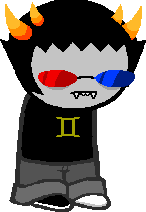

Projects
|
The image to the right is an image map I created using the mobile fish image map creator. The red lens will link you
to MSPaintAdventures.com, the blue lens will take you to gw.mvctc.com, and the gemini symbol will take you to www.aq.com.
|

|
|
The project pictured to the right is a Sarcastic Reponse Generator I coded in C++. Click the image to download
a .zip folder containing the .exe file that it runs from.
|
|
| The map to the right, (credit to Google Maps for the data and API) is a mapping API I have embedded. |
bruh
|